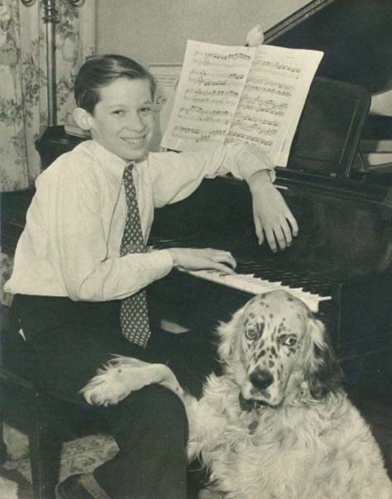

June 1955: Gould records the Goldbergs

Columbia's producers thought the repertoire choice was commercial suicide, and by every sane measure of 1955 they were right. An unknown twenty-two-year-old Canadian pianist, making his debut LP, was insisting on the Goldberg Variations — which in 1955 meant a connoisseur's curiosity, "harpsichord music," an aria with thirty variations that even cultivated listeners knew mostly by reputation, and whose public identity belonged to Landowska's grand priestess manner: august, ceremonial, faintly forbidding. Debut albums were for Chopin. The young man would not be moved.
Glenn Gould arrived at Columbia's East 30th Street studio in June with his sawed-down chair and his humming, and recorded the performance that changed Bach's twentieth-century address. Everything about it contradicted the received Bach: fast where tradition was stately, feather-light where tradition was monumental, staccato-etched where tradition sustained — and above all clear, every contrapuntal line audible as a separate living thing, so that a listener with no training could suddenly follow three and four voices at once and feel the following as pleasure. The canons, the most learned movements in the work, came out not solemn but exhilarating — structure itself delivering the thrill that melody was supposed to own. The record became a genuine bestseller, an outcome nobody had a category for, and a generation discovered that counterpoint could hit like jazz.
The career that followed ran on Bach — the Well-Tempered Clavier, the partitas, his beloved B minor fugue of Book II — and on a modernist creed that Gould preached as tirelessly as he played. Concert halls, he argued, were obsolete: relics of a social ritual that had nothing to do with music. The recording was the artwork — splices, close microphones, and all, the studio's artifices no more dishonest than a novelist's revisions. He quit the stage entirely at thirty-one, at the height of his fame, and made the studio his instrument for the remaining two decades — a decision that scandalized the profession and looks more prophetic with every streaming decade, now that essentially all listening happens exactly where Gould said it would.
Then the frame closed, with a symmetry so uncanny that no biographer could have risked inventing it. In 1981 Gould returned to the Goldbergs and re-recorded them — slower now, inward, x-rayed, the exhilaration of 1955 replaced by something that listens to itself thinking. Months after its release he was dead, at fifty. The two recordings, twenty-six years apart, bracket the career the way the two books of the Well-Tempered Clavier bracket Bach's: one artist, one work, youth and late style, permanently side by side. Every listener can now hold the pair up to the light — same notes, same hands, different lifetime — and the comparison has become one of recorded music's standing meditations on time.
In the arc's gallery this is the modernists' Bach at maximum reach. Where the historical movement was asking what the music sounded like in its own rooms, Gould demonstrated that it needed no room at all: structure as ecstasy, no cathedral required, a dead cantor's variation set outselling the hit parade on the strength of its own architecture. And the card carries a practical footnote that this timeline offers without embarrassment: of all the recordings ever made of this composer, the 1955 Goldbergs is the single one most likely to have brought any living listener — quite possibly you — to Bach in the first place. It remains what it was on release day: track one of the case that Bach is contemporary music.
Continue with the era essay: The Living Bach: 1850–present, or follow this recording off the planet: Voyager, 1977.